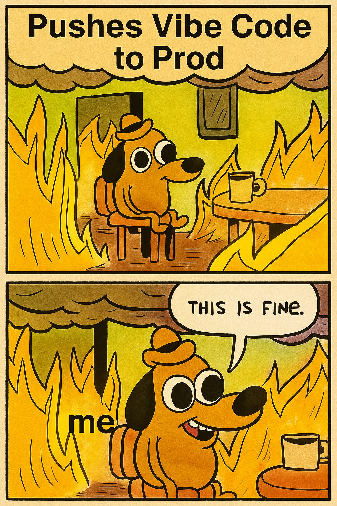

Leveraging {AI} to Code
Going beyond the vibe

AI is closing the technical gap for non-technical people
Birth your ideas into the world
Join the next wave of millionaires and creators
What does this mean? How can everyday non-technical people take the steps, gain the knowledge, and apply it to birth their ideas out into the world.
As vibe coding is becoming more popular, more people are swarming to create the next big mobile app or learn how to code. But just like the name implies, you're relying on your vibe to instruct the AI agent and at the whim of its limitations. Eventually in not too many years, AI is projected to close that technical gap and so anyone and everyone will soon be able to create a top tier production app.
But until then we may want to have the freedom to go beyond and create something that we've always wanted to create.
Elon, whether you agree with him or not, was recently quoted saying that we would reach AGI by the end of next year, and reach superAI projected within the decade. But what's blatantly clear is that the AI that is available to governments and research labs is at a level leagues above what's being released to the mass market or even corporate America at large.
So what happens when everyday people stay with the 95% and don't take massive action. Or if you have that burning desire to birth something new into the world, but don't. In a book about the dying the top regret that they had was not taking the risk or doing the things that they knew would create fulfillment. I'm here to help those who are inspired to maybe learn something from this class or be able to take some of these ideas and apply it to their life and the greater world of tech.
I believe that the most amount of millionaires and billionaires will be minted in the next 10 to 20 years.
If your goal is probably not to chase money but maybe following your life's purpose. Then I think so much is being left on the table for the everyday people who don't try to birth their ideas. Because tech and namely software creation is one of the greatest ways to build leverage for impact when you don't have the money to create a large startup.
This is for the everyday people that have a chance to reach hundreds, thousands, or even millions or billions of people to not just play small but to democratize the creation for value creation and make it accessible for even patient grandmothers and anyone with a desire to be something greater.
Introductions
What inspired you to learn about AI and the future of tech?
What do you hope to get out of this class?
Let's make this a choose your own adventure
Go around the class, have everyone say their name and what inspired them to learn about AI and the future of Tech.
Also do you guys have a general thing that you'd like to get out of this? (read the room and change the course to serve these people)
Get started now resource packet
Elephant tied to rope story - sometimes we limit ourselves based on past experiences. As children, elephants are tied to a rope and can't break free. As adults, they could easily break the rope, but they don't try because they learned as children that it was impossible. Don't be like the elephant - you CAN break free and learn new things.
Who Am I?
Background in ethical hacking
Competitive chess player
Shipping apps & running TechNYC.io
Add picture with Timur Garayev and beating a 2900 on lichess.
Although I do not have many credentials, I always believe that real tangible skills will beat someone with higher education but without the burning desire to learn more and create.
I believe my purpose here on this earth is to enable everyone with or without technical skills, to gain that spark to birth their ideas out into the world and join the 1.5 trillion dollar AI and growing by 3-600 million every year market.
My personal opinion is that 70-90% of traditional jobs will get wiped in the next 7-10 years, and we will see dramatic advancements of AI and Robotics/Nanobot technology and other super-out there ideas in the next 2-5.
Ethical Hacking
Escaped hectic childhood through problem solving
A love of Tinkering and Reverse Engineering
You Win or you Learn, trusting the process
Chess and a secondary spark
Trained with NMs in my 20s
Chess Rewired my Brain
70-100hr work weeks (physical fitness + optimizing sleep)
"A bad plan is better than no plan at all" - Mikhail Chigorin
Fast forward to my 20s I had gained the desire to do chess and learn and compete alongside my coaches who happened to be chess masters and the best players in the state. I had the pleasure to meet and hang out with Timur Garayev, play against Hikaru Nakamura a few times, and travel to play in amateur tournaments.
At the time chess engines were hitting the scene and I took my experience of web development to create a chess app and go deeper into how software can be used for machine learning.
"A bad plan is better than no plan at all" - Mikhail Chigorin (1850–1908)
This quote resonates with me because in both chess and coding, taking action with an imperfect plan is better than waiting for the perfect solution.
My Apps
App Store & Google Play
Running TechNYC.io
At present times I am shipping apps on the App Store and Google Play and also running my tech company, TechNYC.io, where we deliver TechEd in a gamified duolingo-inspired way.
My goal with TechNYC is to make tech education accessible, engaging, and effective for everyone - not just those who can afford expensive bootcamps or degrees.
The gamification approach makes learning addictive in a good way, helping people build consistent habits and actually retain what they learn.
Systems Thinking Wins
The person who implements systems thinking wins over the hardworking person who builds slowly
SWARMS & multi-agent automation
AI as force multiplier on effort
Compete globally as your own business entity
What Are SWARMS and how do they relate to systems thinking and automation? Multi-agent systems, the systems of the future alongside operating in our physical world with smart infrastructure and IoT.
Why AI is a Force Multiplier on effort and what that means for us? AI is a human auto-complete of sorts, more in terms of automation but is not yet outsourcing our creativity. But there are also many arguments that more powerful large language models allow for similar levels of creativity, paying a premium for this power of course.
Why everyone should consider becoming their own business entity and competing on the global market. Artificial intelligence and robotics are part of the technology wave projected to contribute trillions of dollars by the early 2030s, with AI alone expected to influence nearly every occupation and add as much as $13–$16 trillion in market value for major firms as adoption scales. Even though big tech companies publicly emphasize augmentation, frontier AI leaders report that automation is already reshaping hiring patterns, particularly for routine, entry-level, and task-based work, and that up to 70% of current jobs could be replaced or delegated to AI systems within the next decade. This rapid shift makes entrepreneurial independence and lifelong adaptability increasingly valuable in a world where traditional employment structures are under pressure from emerging autonomous systems.
Vibe Coding: Not Even ONCE
{Vibe Coding Memes}
Excellent for getting started, but limits growth at ceiling
Often neglects understanding of syntax and logic
Creates dependency on contractors who may not refine your app
AI assistants help bridge gaps when used properly
Building yourself gives greater satisfaction and capability
DETAILED EXPLANATION:
Vibe coding is an excellent way to get started with software, but ultimately it limits growth once you hit the ceiling of what you don't know.
People who vibe code often rush the app creation process. They neglect to understand files, modules, syntax, and the underlying logic — even if the AI-written language is human-readable and almost like English.
They assume it's easier to pay contractors to save time and handle the hard work. While these developers can help you reach an MVP, they often cannot refine the app and may continue charging to maintain or fix it when it inevitably breaks.
Understanding conventions and syntax doesn't mean learning the entire language overnight. AI assistants, chatbots, or agents are excellent for answering questions. In the opencode demo, we'll cover how to create an extensive blueprint of app features before letting AI build, which helps mitigate mistakes and misdirection caused by LLM quirks.
Creating an app yourself will give you a greater level of satisfaction and allow you to go beyond what the average coder can produce.
Security Threats in the AI Age
Businesses ship tech too fast for IT to keep up
Scaling from 100 to 10,000 users overnight creates vulnerabilities
AI enables masterful malware and persistent access
How do you create robust systems against advanced threats?
What happens when you reach a hundred users, grow to ten thousand overnight and cannot handle the pipeline. Companies these days have the bottom line to ship quickly and get the highest margin for work put in. For this reason IT departments are overloaded with shoring up app security and closing massive holes in infrastructures. Large databases with our valuable information become easy targets when things scale rapidly. Hackers and scammers exfiltrate and leak data to the underground.
Let me tell you a story of The russian bears.... and how easily they gained persistent access.
AI has enabled the average hacker to create masterful works of art in malware, botnets, and namely pry open vulnerabilities in the forms of bugs to gain access to client, the backend, and eventually mass storage in the form of a database.
Once in hackers can insert malicious script and maintain persistence on your production environment doing all of this while often being undetected for months, years or indefinitely without your knowledge while your app continues to be hosted.
So how do I create robust systems in the age when the most advanced threats are perpetually being created and deployed?
Version Control and git
Track changes and collaborate with others
Commit often with meaningful messages
Branch for features, merge when ready
Push to remote repositories (GitHub, GitLab)
git init
git add .
git commit -m "Initial commit"
git push origin main
Version control is essential for any serious development work. Git is the industry standard.
Key concepts:
- Repository: Your project folder tracked by git
- Commit: A snapshot of your code at a point in time
- Branch: A parallel version of your code
- Merge: Combining branches together
- Remote: A copy of your repo on a server (like GitHub)
Best practices:
- Commit often with clear, descriptive messages
- Create branches for new features
- Use pull requests for code review
- Never commit secrets or API keys
Basic workflow:
1. Make changes to your code
2. git add to stage changes
3. git commit to save snapshot
4. git push to upload to remote
This allows you to collaborate with others, revert mistakes, and track your project's history.
Learning Best Practices
Understand problem-solving logic before writing code
Practice with whiteboarding exercises
Read official documentation to learn conventions
Compare high-level vs low-level languages
Learn the difference between compiling and transpiling
Explore frameworks and select one that fits your goals
Set up a coding environment for productivity
Experiment with tools and libraries to build your personal toolkit
Reference memes or analogies to remember concepts
These are practical tips for learning to code effectively.
Understand the logic and problem-solving approach before diving into syntax.
Whiteboarding helps you think through problems without getting distracted by code.
Official documentation is your best friend - learn to read it and reference it often.
Understanding the difference between high-level and low-level languages, compiling vs transpiling, and other fundamental concepts will make you a better developer.
Choose your tools wisely - explore frameworks and find what works for your goals.
Your development environment matters - invest time in setting it up properly.
Build your personal toolkit of libraries and tools you trust and understand.
Don't underestimate the power of analogies and memes - they help concepts stick!
The Command Line Is Your Friend
Bash, ZSH, and mastering Unix
# Navigate directories
cd ~/projects/my-app
# List files with details
ls -la
# Run your app
npm start
The command line is your friend. Going back to the origin of MS-DOS. Bash, ZSH, and mastering Unix commands.
Understanding the command line gives you power over your system. Unix commands are fundamental to modern development. Learn how to navigate, manipulate files, and run programs from the terminal.
This is where real developers live - in the terminal. GUI tools are nice, but the command line is where you have true control.
Fun Exercise: Code Creates Music
Let's make some sounds with JavaScript
Open your browser console (F12)
Try the Web Audio API
Experiment with frequencies and timing
// Create audio context
const audioCtx = new AudioContext();
const oscillator = audioCtx.createOscillator();
// Set frequency (440Hz = A note)
oscillator.frequency.value = 440;
oscillator.connect(audioCtx.destination);
// Play for 1 second
oscillator.start();
setTimeout(() => oscillator.stop(), 1000);
This is a fun, interactive exercise to show how code can create music and sounds.
Have students open their browser console and experiment with the Web Audio API. They can change frequencies, durations, and create simple melodies.
Web Audio API basics:
- AudioContext: The main audio processing graph
- Oscillator: Generates waveforms (sine, square, sawtooth, triangle)
- Frequency: Pitch of the sound (Hz)
- 440Hz = A note (standard tuning)
Challenge them to:
- Create different notes by changing frequency
- Play multiple notes in sequence
- Create simple melodies or rhythms
This demonstrates that coding isn't just about business apps - you can create art, music, games, and interactive experiences with code.
Case Studies: Cool Visual Effects with Code
You can do a lot with very little code, leveraging JS
Penguins on Bread video - shell script example showing creative coding.
Sarah Drasner is an incredible developer who creates amazing visual effects with clean, elegant code.
Check out these CodePen examples to see what's possible with JavaScript and SVG animations.
The point is: you don't need complex frameworks or thousands of lines of code to create impressive visual effects. Understanding the fundamentals and being creative goes a long way.
OpenCode: Replace the Vibe
Prompt Engineering for Dummies!
Context: Give the AI background information
Task: Clearly state what you want
Format: Specify how you want the output
Examples: Show the AI what good looks like
Constraints: Set boundaries and limitations
OpenCode is about replacing "vibe coding" with structured, intentional prompting.
The elements of a good prompt:
1. Context - Give the AI background about your project, tech stack, and goals
2. Task - Clearly state what you want the AI to do
3. Format - Specify how you want the output (code, explanation, steps, etc.)
4. Examples - Show the AI examples of what you're looking for
5. Constraints - Set boundaries (no external libraries, must be compatible with X, etc.)
This systematic approach to prompting will get you much better results than just "vibing" and hoping for the best.
Prompt Engineering: Using AI to create the AI
Pair up with a partner
Take turns being the prospective user and the app engineer
Ask each other these 4 questions:
Basics of Prompt Engineering
Using ChatGPT to prompt the Coding Agent
Asking the right questions
Choosing your consequences, baking in some guard rails
Interactive exercise - pair up and practice creating a prompt, and then we'll feed it to the AI
Syntax: Containers for Meaning
Think of syntax as boxes that hold logic
// Simple variable
let name = "value";
Syntax: Containers for Meaning
Scope is like building floors
// Global scope (entire building)
let globalVar = "everyone can see";
function myFunction() {
// Local scope (one floor)
let localVar = "only this floor";
}
Elephant connected to a pole - an elephant that doubts itself will not pull the stake out of the ground.
What is syntax... how to read it like English, logic vs intuition.
In learning about syntax I think it's important to learn as you run into new ideas and concepts. One of the best ways to learn is through the adventure of building rather than being in a classroom and over conceptualizing the idea. Think of syntax as containers or boxes for meaning, it can often seem very binary but it makes up the skeleton of data, logic and rules.
But also writing your syntax in modular files allows you to separate code and keep things organized and also to separate global and local scope. Think of scope as elevators and escalators up levels, some there is a global scope that is shared and inherited from the top local scopes and other times you want to keep the meaning and the modularity just imported on one or a couple of building floors. Each floor represents the scope or the containment within your app state, and so you can have the global overall app state and then simultaneously have containment and smaller substates that operate within the whole and make different features and processes available at will or concurrently to all of this.
Learn how to learn - this is the key. Don't get overwhelmed by trying to memorize everything. Learn as you build.
Generating an Idea Worth Your Time
What problem am I solving?
What is my intention for building this?
A compelling reason fuels creativity
Having a compelling reason and purpose will allow you to access and generate problem solving and creativity.
Ask yourself: What problem am I solving? What is my intention for building this application?
The "why" behind your project is more important than the "how". If you have a strong enough reason, you'll find a way to make it happen.
Your personal experience and unique perspective are valuable - bake them into your application. Don't just build another clone of existing apps. Build something that solves a real problem you've experienced.
From Build to App Architecture
Start with a blueprint before coding
Separate concerns: Frontend, Backend, Database
Choose your stack: MERN, PERN, Django, etc.
Plan for scalability from day one
Document your architecture decisions
Going from "just building" to thinking architecturally is a huge leap in software development.
Key architectural concepts:
SEPARATION OF CONCERNS:
- Frontend: What users see and interact with (React, Vue, Angular)
- Backend: Business logic and API (Node, Python, Java)
- Database: Data storage (PostgreSQL, MongoDB, MySQL)
POPULAR STACKS:
- MERN: MongoDB, Express, React, Node
- PERN: PostgreSQL, Express, React, Node
- Django: Python full-stack framework
- Ruby on Rails: Ruby full-stack framework
ARCHITECTURAL PATTERNS:
- MVC: Model-View-Controller
- Microservices: Independent services that communicate
- Monolith: All-in-one application
- Serverless: Functions as a service
PLANNING FOR SCALE:
- Use caching (Redis)
- Load balancing
- Database indexing
- CDN for static assets
Don't over-engineer early, but have a vision for where your app needs to go. Start simple, but design with growth in mind.
Creating Agents That Work While You Sleep
Automate repetitive tasks with scripts
Use cron jobs for scheduled execution
Build AI agents with LangChain or AutoGPT
Monitor, log, and alert on failures
Let automation compound your efforts
Creating agents and automation is how you multiply your productivity.
TYPES OF AUTOMATION:
1. SIMPLE SCRIPTS:
- Data processing
- File management
- API calls and data syncing
2. SCHEDULED JOBS (Cron):
- Run backups at 3am
- Generate daily reports
- Clean up old data
3. AI AGENTS:
- LangChain: Chain multiple AI calls together
- AutoGPT: Autonomous task execution
- Custom agents with OpenAI API
4. MONITORING & ALERTS:
- Health checks
- Error notifications (email, Slack, SMS)
- Performance monitoring
BENEFITS:
- Work gets done while you sleep
- Consistency and reliability
- Free up time for creative work
- Scale beyond your personal capacity
EXAMPLES:
- Social media posting bot
- Data scraping and analysis
- Customer support chatbot
- Code review automation
- Testing and deployment pipelines
Start small: automate one task this week. Then build from there. The compound effect of automation is massive.
CyberSec & Ethical Hacking
Harden your app's security and adopt best practices
Never trust user input - sanitize everything
Use environment variables for secrets
Implement authentication & authorization properly
Keep dependencies updated (npm audit)
Use HTTPS everywhere
Test for common vulnerabilities (OWASP Top 10)
Security is NOT an afterthought - it must be built in from the start.
COMMON VULNERABILITIES (OWASP Top 10):
1. Injection attacks (SQL injection, XSS)
2. Broken authentication
3. Sensitive data exposure
4. XML external entities (XXE)
5. Broken access control
6. Security misconfiguration
7. Cross-site scripting (XSS)
8. Insecure deserialization
9. Using components with known vulnerabilities
10. Insufficient logging and monitoring
BEST PRACTICES:
INPUT VALIDATION:
- Never trust user input
- Sanitize and validate all data
- Use parameterized queries for databases
- Escape output to prevent XSS
SECRETS MANAGEMENT:
- NEVER commit API keys or passwords to git
- Use environment variables (.env files)
- Use secret management tools (AWS Secrets Manager, HashiCorp Vault)
AUTHENTICATION:
- Use bcrypt for password hashing (never store plain text)
- Implement JWT tokens properly
- Add rate limiting to prevent brute force
- Use 2FA when possible
DEPENDENCIES:
- Run npm audit regularly
- Keep packages updated
- Remove unused dependencies
- Use Snyk or Dependabot for automated checks
ETHICAL HACKING:
- Learn to think like an attacker
- Practice on deliberately vulnerable apps (DVWA, WebGoat)
- Understand the mindset to defend better
- Bug bounties can teach you a lot
Security is a journey, not a destination. Stay vigilant and keep learning.
The Future of AI and Humanity
AI is here to stay
70% of jobs projected to be automated
Adapt or be left behind
It's here to stay but what does the future look like if we're projected to wipe out 70% of jobs or more as an assumption of the biggest tech CEOs and what Elon and others are forging ahead to create.
The question isn't WHETHER AI will transform society - it's WHEN and HOW.
Major tech leaders predict massive job displacement. This isn't fear-mongering - it's reality. The best way to prepare is to learn these skills now while you still can.
Those who adapt and learn to work with AI will thrive. Those who resist will struggle. Which side do you want to be on?
Work-Life Balance & Success
Pull the lever, but maintain balance
Boredom is underrated
Success is a marathon, not a sprint
Pulling the lever while still maintaining balance in life. Boredom is one of the rich person's ideas to success.
You don't need to hustle and grind 24/7. That's unsustainable and leads to burnout.
Many successful people attribute their best ideas to moments of boredom - times when their mind is free to wander and make connections.
Work hard when you work, but also give yourself space to rest, think, and recharge. Balance is key to long-term success.
The person who stays consistent over years will beat the person who burns out after months of intense work.
Live Coding Demo
Watch as we build something live
See the process: plan → code → test → deploy
Ask questions as we go
TechNYC.io
Gamified tech education for everyone
Learn to code the way you learned language - through practice and engagement
DEMO OUTLINE:
Choose something impressive but achievable in 10-15 minutes:
- Build a simple API endpoint
- Create an interactive web component
- Demonstrate AI integration (OpenAI API call)
- Show database operations
- Deploy something live
DEMO TIPS:
- Have it pre-planned but make it look spontaneous
- Explain your thinking process as you code
- Show debugging when things go wrong (they will!)
- Keep it simple - focus on concepts not complexity
- Have backup plan if internet/tech fails
TECHNYC.IO PITCH:
What makes it different:
- Gamified learning (like Duolingo for tech)
- Bite-sized lessons you can do in 5-10 minutes
- Real projects, not toy examples
- Community support and mentorship
- Affordable - way cheaper than bootcamps
- Self-paced but structured
Target audience:
- Complete beginners
- Career changers
- People who tried coding before and got stuck
- Anyone who wants practical skills fast
Show your passion for making tech education accessible. This is your chance to inspire and recruit!
Q&A and Resources
Learning Resources
FreeCodeCamp.org - Free full curriculum
MDN Web Docs - Best web dev reference
OpenCode - AI-powered coding assistant
The Odin Project - Full-stack curriculum
CS50 - Harvard's intro to CS (free on YouTube)
Communities
r/learnprogramming on Reddit
Dev.to - Developer blogging community
Discord coding servers
Local meetups and hackathons
Questions?
This is your chance to answer questions and provide resources for continued learning.
ENCOURAGE QUESTIONS:
- No question is too basic
- Create a safe space for asking
- Answer thoroughly but concisely
- Connect questions to real-world applications
ADDITIONAL RESOURCES TO MENTION:
FREE LEARNING:
- YouTube channels: Traversy Media, Net Ninja, Fireship
- Podcasts: Syntax.fm, CodeNewbie
- Documentation: Always read the official docs
PAID BUT WORTH IT:
- Frontend Masters
- Udemy courses (wait for sales)
- Pluralsight
- TechNYC.io (plug your platform!)
PRACTICE:
- LeetCode for algorithms
- Frontend Mentor for UI challenges
- CodeWars for problem solving
- Build real projects, not tutorials
STAYING CURRENT:
- Hacker News
- Dev.to
- Twitter tech community
- Newsletter: JavaScript Weekly, Node Weekly, etc.
FINAL WORDS:
- Start today, don't wait for "perfect" time
- Consistency beats intensity
- Build in public, share your journey
- Help others when you can - teaching reinforces learning
- The tech community is welcoming - don't be afraid to ask for help
Thank everyone for their time and attention. Provide your contact info for follow-up questions.